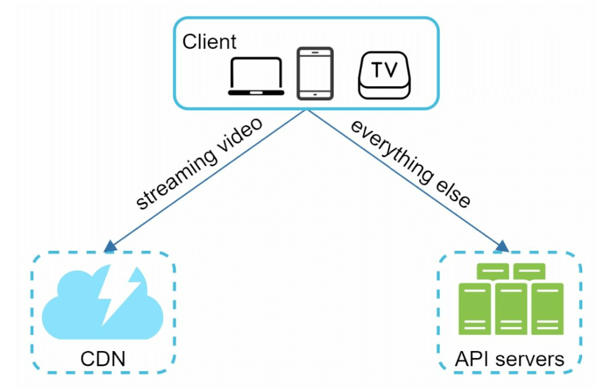
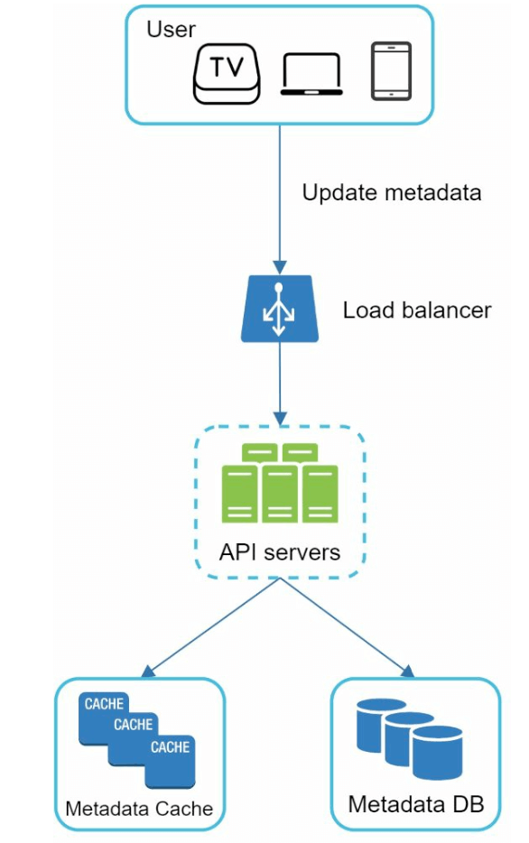
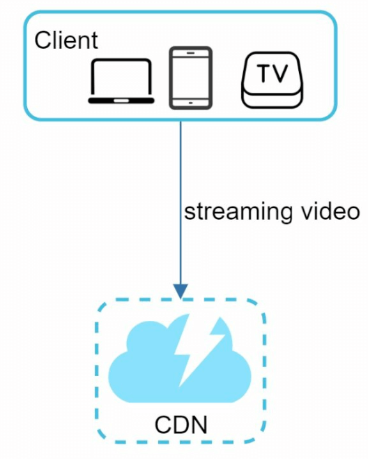
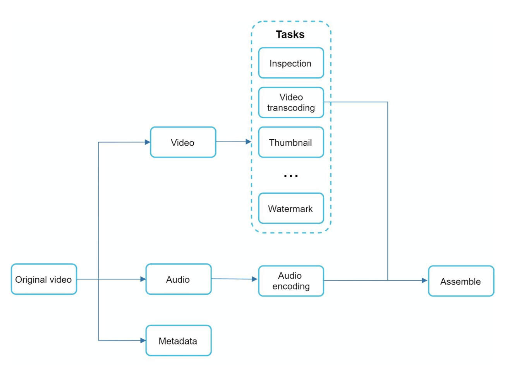
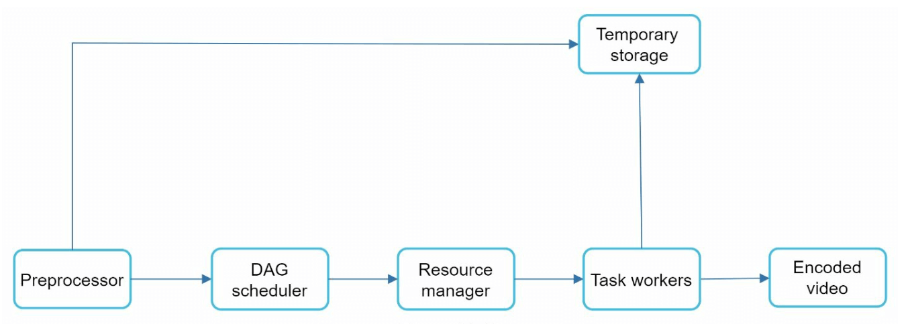
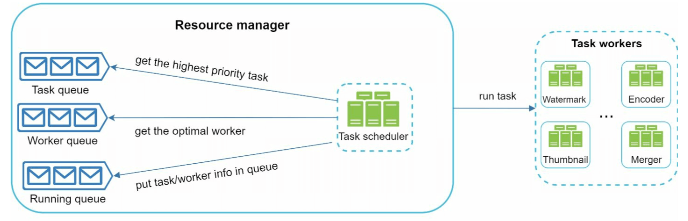
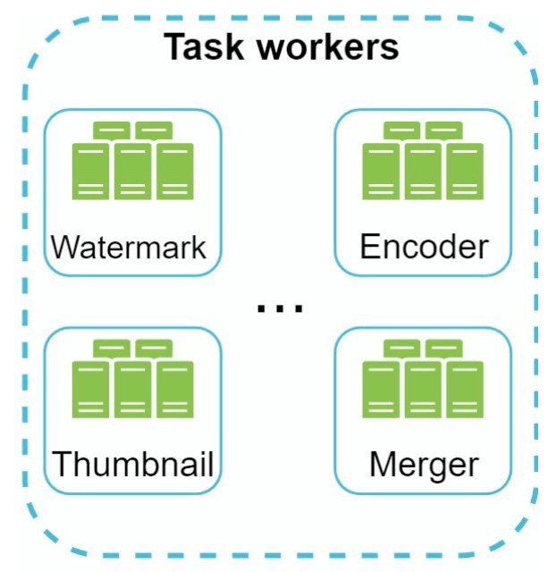
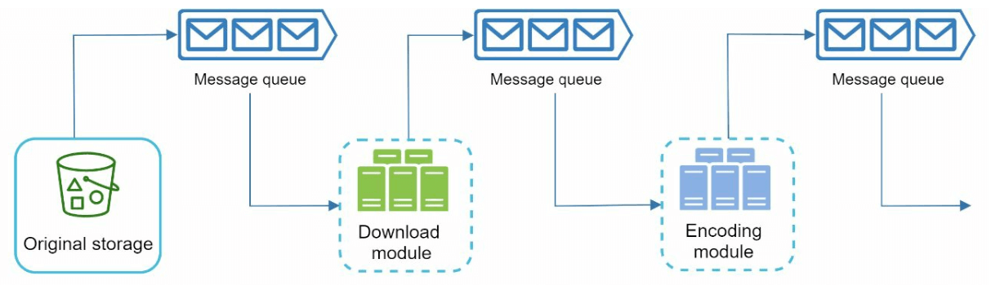

Chapter 14: Design YouTube
Introduction
YouTube is a massive video streaming platform supporting video uploads, playback, and various interactions. This chapter focuses on designing a scalable video streaming system with the following core features:
- Fast video uploads
- Smooth video streaming
- Ability to change video quality
- Low infrastructure cost
- High availability and reliability
Key Statistics (2020)
- 2 billion monthly active users
- 5 billion videos watched per day
- 37% of mobile internet traffic comes from YouTube
- Available in 80 languages
- $15.1 billion ad revenue in 2019
Step 1: Understand the Problem and Scope
Core Functionalities
1. Upload videos
2. Watch videos
Supported Platforms
- Mobile apps, web browsers, and smart TVs
Assumptions
- Daily Active Users (DAU): 5 million
- Average Video Size: 300 MB
- Upload Limits: Max 1 GB per video
- Daily Storage Need: 150 TB
- CDN Costs: 5 million * 5 videos * 0.3GB * $0.02 = $150,000/day (using Amazon CloudFront)
Step 2: High-Level Design
Components

1. Client: Devices like smartphones, computers, and TVs.
2. CDN (Content Delivery Network): Stores and streams videos.
3. API Servers: Handles all user interactions except video streaming (e.g., uploads, metadata updates).
4. Metadata Database: Stores video metadata (e.g., title, description, size).
5. Original Storage: Blob storage for uploaded videos.
6. Transcoding Servers: Convert videos into multiple resolutions and formats.
7. Transcoded Storage: Blob storage for transcoded videos.
Core Workflows
1. Video Uploading Flow
- Parallel Processes:
1. Upload video to original storage.
2. Update video metadata in the database.
- Video Upload (Steps):

- [1] Videos are uploaded to blob storage.
- [2] Transcoding servers convert videos to multiple formats.
- [3] One trasncoding is complete, following two steps are exectued in parallel.
- [3a] Transcoded videos are sent to transcoded storage.
- [3b] Transcoding completion events are queued in the completion queue.
- [3a.1] Videos are distributed to the CDN.
- [3b.1] Completion handlers update metadata and inform users.
- Metadata Upload (Steps):

- The client in parallel sends a request to update the video metadata
- The request contains video metadata, including file name, size, format, etc.
2. Video Streaming Flow

- Videos are streamed directly from the CDN using edge servers to minimize latency.
- Some of te popular streaming protocols are MPEG_DASH, Apple HLS, Adobe HDS.
- *Different streaming protocols support different video encodings and playback players.*
Step 3: Design Deep Dive
Video Transcoding
Importance
1. Raw video consumes large amounts of storage space. It Reduces storage space.
2. Ensures compatibility across devices and browsers.
3. Adapts video quality to network conditions.
Components
- Container: Encapsulates video, audio, and metadata (e.g., MP4, AVI).
- Codecs: Compression and Decompression algorithms (e.g., H.264, VP9).
Directed Acyclic Graph (DAG) Model

- Transcoding a video is computationally expensive and time-consuming.
- DAG Model defines tasks like encoding, thumbnail generation, and watermarking.
- Allows high parallelism in video processing.
- The original video is split into video, audio, and metadata.
- Video encodings: Videos are converted to support different resolutions, codec, bitrates.
- Thumbnail: It can either be uploaded by a user or automatically generated bythe system.
- Watermark: Image overlay on top of your video contains identifying information about the video.
Video Transcoding Architecture

1. Preprocessor: Splits videos into smaller chunks (GOP alignment). It has 4 responsibilities.

- Video splitting: Video stream is split or further split into smaller Group of Pictures (GOP) alignment.
- It split videos by GOP alignment for old clients.
- It generates DAG based on configuration files client programmers write.
- It stores GOPs and metadata in temporary storage in case the encoding fails, the system could use persisted data for retry operations.
2. DAG Scheduler: Organizes tasks into sequential or parallel stages.

- It splits a DAG graph into stages of tasks and puts them in the task queue in the resource manager.
- Stage 1: video, audio, and metadata.
- The video file is further split into two tasks in stage 2: video encoding and thumbnail.
3. Resource Manager: Responsible for managing the efficiency of resource allocation.It
contains 3 queues and a task scheduler.

- Task queue: priority queue that contains tasks to be executed.
- Worker queue: priority queue that contains worker utilization info.
- Running queue: contains currently running tasks and workers running the tasks.
- Task scheduler: picks the optimal task/worker, and instructs the chosen task worker to execute the job.
4. Task Workers: Perform transcoding and other operations.

- Different task workers may run different tasks
5. Temporary Storage: Stores intermediate data for retries.
- The choice of storage system depends on factors like data type, data size, access frequency, data life span, etc.
6. Output: Transcoded videos ready for distribution.
System Optimizations
Speed Optimizations
1. Parallel Video Uploads: Split videos into smaller chunks for faster, resumable uploads.

2. Distributed Upload Centers: Use CDNs as upload hubs close to users.
3. Parallel Processing: Decouple modules using message queues for high parallelism.


Safety Optimizations
1. Pre-Signed URLs: Restrict video uploads to authorized users.

2. Protect Videos:
- DRM Systems (e.g., Apple FairPlay, Google Widevine).
- AES Encryption.
- Watermarking.
Cost-Saving Optimizations
1. Serve only popular videos via CDN; less popular ones from high-capacity servers.
2. Encode on-demand for rarely accessed videos.
3. Regionalize video distribution based on popularity.
4. Build custom CDNs and partner with ISPs to reduce bandwidth costs.
Error Handling
Recoverable Errors
- Retry failed uploads, transcoding, or resource allocation tasks.
Non-Recoverable Errors
- Stop malformed video processing and return error codes.